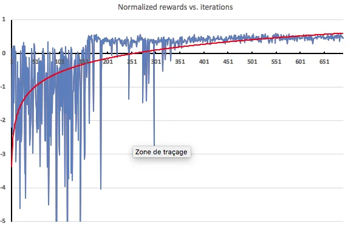
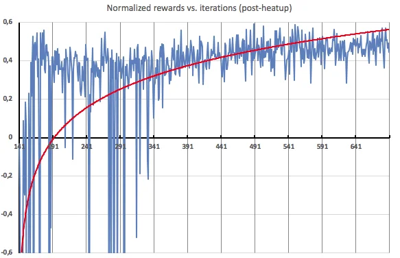

Published: 2018-11-28 | Originally published at AWS Blog
In the last few years, machine learning (ML) has generated a lot of excitement. Indeed, from medical image analysis to self-driving trucks , the list of complex tasks that ML models can successfully accomplish keeps growing, but what makes these models so smart?
In a nutshell, you can train a model in several different ways of which these are three:
Launched at AWS re:Invent 2017, Amazon SageMaker is helping customers quickly build, train and deploy ML models. Today, with the launch of Amazon SageMaker RL , we’re happy to extend the advantages of Amazon SageMaker to reinforcement learning, making it easier for all developers and data scientists regardless of their ML expertise.
A quick primer on reinforcement learning
Reinforcement learning (RL) can sound very confusing at first, so let’s take an example. Imagine an agent learning to navigate a maze. The simulator allows it to move in certain directions but blocks it from going through walls: using RL to learn a policy, the agent soon starts to take increasingly relevant actions.
One critical thing to understand is that the RL model isn’t trained on a predefined set of labelled mazes (that would be supervised learning). Instead, the agent discovers its environment (the current maze) one step at at time, moves one more step and receives a reward: stepping into a dead end is a negative reward, moving one step closer to the exit is a positive reward. Once a number of different mazes have been processed, the agent learns the action/reward data points and trains a model to make better decisions next time around. This cycle of exploring and training is central to RL: given enough mazes and enough training time, we would soon enough know how to navigate any maze.
RL is particularly suitable for complex, unpredictable, environments that can be simulated and where building a prior dataset would either be infeasible or prohibitively expensive: autonomous vehicles, games, portfolio management, inventory management, robotics or industrial control systems. For instance, researchers have shown that applying RL-based control to HVAC systems can result in 20% – 40% cost savings compared to typical rule-based systems [1], not to mention the large reduction in ecological footprint.
Introducing Amazon SageMaker RL
Amazon SageMaker RL builds on top of Amazon SageMaker, adding pre-packaged RL toolkits and making it easy to integrate any simulation environment. As you would expect, training and prediction infrastructure is fully managed, so that you can focus on your RL problem and not on managing servers.
Today, you can use containers provided by SageMaker for Apache MXNet and Tensorflow that include Open AI Gym , Intel Coach and Berkeley Ray RLLib . As usual with Amazon SageMaker, you can easily create your own custom environment using other RL libraries such as TensorForce or StableBaselines.
When it comes to simulation environments, Amazon SageMaker RL supports the following options:
Editors note May 18, 2022 – Amazon Sumerian is no longer available to new customers. Existing customers’ Sumerian data will be available until February 21, 2023. We recommend that these customers transition their existing scenes to Babylon.js where they can be published using AWS Amplify. For more information about Amazon Sumerian and tutorials on transitioning your existing scenes, please see our FAQ here .
Amazon SageMaker RL also comes with a collection of Jupyter notebooks, just like Amazon SageMaker does. They are available on Github, featuring both simple examples (cartpole, simple corridor) as well as advanced ones in a variety of domains such as robotics, operations research, finance, and more. You can easily extend these notebooks and customize them for your own business problem.
In addition, you’ll find examples showing you how to scale RL using either homogeneous or heterogeneous scaling. The latter is particularly important for many RL applications where simulation runs on CPUs and training on GPUs. Your simulation environment can also run locally or remotely in a different network and SageMaker will set everything up for you.
Don’t worry, this is easier than it seems. Let’s look at an example.
Predictive Auto Scaling with Amazon SageMaker RL
Auto Scaling allows you to dynamically scale your service (such as Amazon EC2), adding or removing capacity automatically according to conditions you define. Today, this typically requires setting up thresholds, alarms, scaling policies, etc.
Let’s see how we could optimize this process with a RL model and a custom simulator, pretending to scale your Amazon EC2 capacity (of course, this is just a toy example). For the sake of brevity, I will only highlight the most important code snippets: you’ll find the complete example on Github .
Here, the name of the game is to adapt the instance capacity to the load profile. We don’t want to be under-provisioned (losing traffic) or over-provisioned (wasting money): we want to be ‘just right’.
In RL terms:
Setting up the simulation
First, we need a simulator in order to generate load profiles similar to what you would observe on a high-traffic web server: let’s use a very simple Python program for that. Here’s an example plotting transactions per minute (tpm) over a 3-day period: mostly periodic with sharp unpredictable spikes.
This is the initial state:
config_defaults = {
"warmup_latency": 5, # It takes 5 minutes for a new machine to warm up and become available.
"tpm_per_machine": 300, # Each machine can process 300 transactions per minute (tpm) on average
"tpm_sigma": 30, # Machine's TPM capacity is variable with +/- 30 standard deviation
"machine_cost": 0.05, # Machines cost $0.05/min
"transaction_val": 0.90, # Successful transactions are worth $0.90 per thousand (CPM)
"downtime_cost": 200, # Downtime is assumed to cost the business $200/min beyond incomplete transactions
"downtime_percent": 99.5, # Downtime is defined as availability dropping below 99.5%
"initial_machines": 50, # How many machines are initially turned on
"max_time_steps": 1000, # Maximum number of timesteps per episode
}
Computing the reward
This is quite straightforward! The current load is compared to the current capacity, we deduct the cost of any lost transaction and we apply a large penalty for losing more than 0.5% (a pretty strict definition of downtime!).
def _react_to_load(self):
self.capacity = int(self.active_machines * np.random.normal(self.tpm_per_machine, self.tpm_sigma))
if self.current_load <= self.capacity:
# All transactions succeed
self.failed = 0
succeeded = self.current_load
else:
# Some transactions failed
self.failed = self.current_load - self.capacity
succeeded = self.capacity
reward = succeeded * self.transaction_val / 1000.0 # divide by thousand for CPM
percent_success = 100.0 * succeeded / (self.current_load + 1e-20)
if percent_success < self.downtime_percent:
self.is_down = 1
reward -= self.downtime_cost
else:
self.is_down = 0
reward -= self.active_machines * self.machine_cost
return rewardStepping through the simulation
Here’s how the agent goes through each time step initiated by the RL framework. As explained above, the model will initially predict random actions, but after a few training rounds, it’ll get much smarter.
def step(self, action):
# First, react to the actions and adjust the fleet
turn_on_machines = int(action[0])
turn_off_machines = int(action[1])
self.active_machines = max(0, self.active_machines - turn_off_machines)
warmed_up_machines = self.warmup_queue[0]
self.active_machines = min(self.active_machines + warmed_up_machines, self.max_machines)
self.warmup_queue = self.warmup_queue[1:] + [turn_on_machines]
# Now react to the current load and calculate reward
self.current_load = self.load_simulator.time_step_load()
reward = self._react_to_load()
self.t += 1
done = self.t > self.max_time_steps
return self._observation(), reward, done, {}
Training on Amazon SageMaker
Now, we’re ready to train our model, just like any other SageMaker model: passing the image name (here, the TensorFlow container for Intel Coach), the instance type, etc.
rlestimator = RLEstimator(role=role, framework=Framework.TENSORFLOW, framework_version='1.11.0', toolkit=Toolkit.COACH, entry_point="train-autoscale.py", train_instance_count=1, train_instance_type=p3.2xlarge) rlestimator.fit()
In the training log, we see that the agent first explores its environment without any training: this is called the heatup phase and it's used to generate an initial dataset to learn from.
## simple_rl_graph: Starting heatup
Heatup> Name=main_level/agent, Worker=0, Episode=1, Total reward=-39771.13, Steps=1001, Training iteration=0
Heatup> Name=main_level/agent, Worker=0, Episode=2, Total reward=-3089.54, Steps=2002, Training iteration=0
Heatup> Name=main_level/agent, Worker=0, Episode=3, Total reward=-43205.29, Steps=3003, Training iteration=0
Heatup> Name=main_level/agent, Worker=0, Episode=4, Total reward=-24542.07, Steps=4004, Training iteration=0
...Once the heatup phase is complete, the model goes through repeated cycles of learning (aka 'policy training') and exploration based on what it has learned (aka 'training').
Policy training> Surrogate loss=-0.09095033258199692, KL divergence=0.0003891458618454635, Entropy=2.8382163047790527, training epoch=0, learning_rate=0.0003
Policy training> Surrogate loss=-0.1263471096754074, KL divergence=0.00145535240881145, Entropy=2.836780071258545, training epoch=1, learning_rate=0.0003
Policy training> Surrogate loss=-0.12835979461669922, KL divergence=0.0022696126252412796, Entropy=2.835214376449585, training epoch=2, learning_rate=0.0003
Policy training> Surrogate loss=-0.12992703914642334, KL divergence=0.00254297093488276, Entropy=2.8339898586273193, training epoch=3, learning_rate=0.0003
....
Training> Name=main_level/agent, Worker=0, Episode=152, Total reward=-54843.29, Steps=152152, Training iteration=1
Training> Name=main_level/agent, Worker=0, Episode=153, Total reward=-51277.82, Steps=153153, Training iteration=1
Training> Name=main_level/agent, Worker=0, Episode=154, Total reward=-26061.17, Steps=154154, Training iteration=1
Once the model hits the number of epochs that we set, training is complete. In this case, we trained for 18 minutes: let's see how well our model learned.
Visualizing training
One way to find out is to plot the rewards received by the agent after each exploration iteration. As expected, rewards in the heatup phase (150 iterations) are extremely negative because the agent hasn't been trained at all. Then, as soon as training is applied, rewards start to improve rapidly.

Here's a zoom on post-heatup iterations. As you can see, about halfway through, the agent starts receiving pretty consistent positive rewards, showing that it's able to apply efficient scaling to the load profiles that it discovers.

Deploying the model
If we're happy with the model, we can then deploy it just like any SageMaker model and use the newly-created HTTPS endpoint to predict. Alternatively, if you are training a robot then you can also deploy on Edge devices using AWS Greengrass.
Now available
I hope this post was informative. We've barely scratched the surface of what Amazon SageMaker RL can do. You can use it today in all regions where Amazon SageMaker is available. Please start exploring and let us know what you think. We can't wait to see what you will build!
— Julien ;
[1] "Deep Reinforcement Learning for Building HVAC Control", T. Wei, Y. Wang and Q. Zhu, DAC'17, June 18-22, 2017, Austin, TX, USA.
Julien is the Artificial Intelligence & Machine Learning Evangelist for EMEA . He focuses on helping developers and enterprises bring their ideas to life. In his spare time, he reads the works of JRR Tolkien again and again.
{kind=link}
{kind=link}